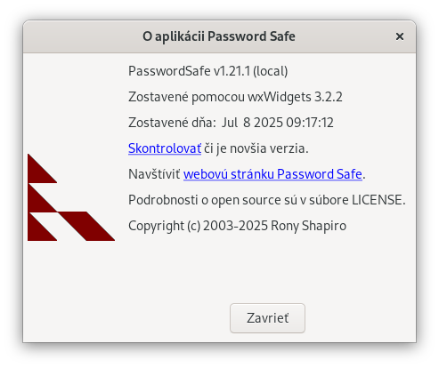

Menu Nápoveda poskytuje prístup k rôznym zdrojom o aplikácii Password Safe.
Otvorí tento súbor nápovedy.
Otvorí domovskú stránku aplikácie Password Safe v prehliadači.
Otvorí dialógové okno zobrazujúce číslo verzie a upozornenie na autorské práva, ako aj možnosť skontrolovať či je k dispozícii novšia verzia aplikácie Password Safe. Upozorňujeme, že z bezpečnostných dôvodov aplikácia Password Safe pred pripojením na internet zatvorí aktuálnu databázu a skontroluje dostupnosť novšej verzie aplikácie.
